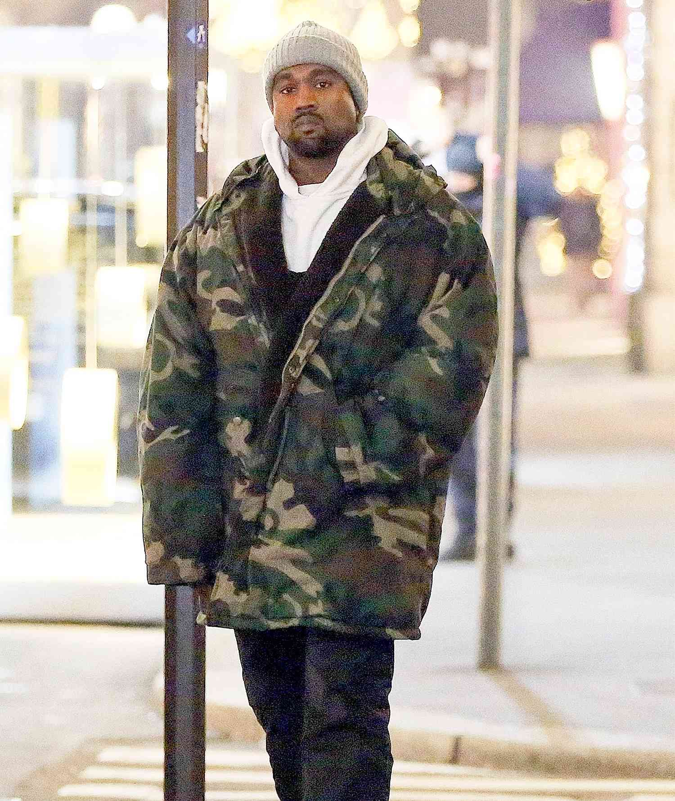
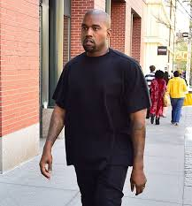

Fashion section
This section talks about kanye's personal products and collabortions over the years
Yeezy Season 5 Down Camouflage Coat

INFO: The Yeezy Season 5 Down Camouflage coat is a standout piece from Kanye west's 2017 collection, known for it's oversized fit,sherpa fleece lining and distintctive woodland camo pattern. This coat has become a sought-after item among fashion enthusiasts and collectors
Yeezy Season 3 Coat
INFO: Yeezy Season 3 collection, unveiled by Kanye West in 2016, showcased a range of outerwear piece that have since become iconic in the fashion world. Characterized by oversized silhouettes, military-inspired designs and muted color pallettes, these coats and jackets reflect Kanye's unique vision of contemporary streetwear.
Yeezy Season 4 Oversized Shirt

INFO: The Yeezy Season 4 collection, unveiled by Kanye West on September 7, 2016, during New York Fashion Week, marked a significant moment in the Yeezy fashion line. The show took place at Franklin D. Roosevelt Four Freedoms Park on Roosevelt Island and was notable for its unique presentation and the challenges it faced.
Men Yeezy Desert Boot Oil
INFO: The adidas Yeezy Desert Boot 'Oil'(EG6463) is a rugged, military-inspired boot designed by Kanye West. Released in April 2019, this boot combines functionality with streetwear aesthetics.
Adidas Yeezy 500 Desert Rat
INFO: The Adidas Yeezy 500 Desert Rat, particularly in the "Bulsh" color way, is a notable relsease from Kanye West's collaboration with Adidas. Debuting in December 2017 through a limited pre-order, it saw a wider release in April 2018. This model is distinguished by its chunky silhouette, combining suede, mesh, adn leather materials, and features an adiPRENE+ midsole for cushioning.
Adidas Yeezy Boost 350
INFO: The Adidas Yeezy Boost 350 V2 is a standout model from Kanye West's collaboration with Adidas, celebrated for its sleek design, comfort, and cultural impact. In Nigeria, pacticularly in Lagos, there are several avenues to purchase both new and pre-owned pairs